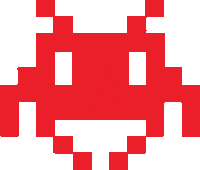

xxxx
xxxx

xxxx
xxxx

xxxx
xxxx
Score: xxxxxxxxx
Lives: xx

Spielanleitung
Der Spieler steuert eine Kanone, die er am unteren Bildschirmrand nach links und rechts fahren kann.
Jedes Level beginnt mit mehreren Reihen regelmäßig angeordneter Aliens, die sich ständig horizontal und
dabei nach und nach abwärts bewegen und den Spieler mit Geschossen angreifen. Der Spieler selbst hat
einen unbegrenzten Munitionsvorrat, kann aber erst dann ein neues Geschoss abfeuern, wenn das vorige vom
Bildschirm verschwunden ist. Wenn es einem der Aliens gelingt, den unteren Bildschirmrand zu erreichen und
neben der Kanone zu landen, verliert der Spieler eines seiner Leben.
Als Deckung stehen dem Spieler „Blöcke“ zur Verfügung, hinter denen er sich so lange verstecken kann,
bis der Block von den Aliens oder von ihm selbst zerschossen wird. Gelegentlich taucht ein Bonus-Raumschiff
auf. Wenn der Spieler es trifft, erhält er zusätzliche Punkte.
close
Bei Problem, Fehlern oder wenn nichts mehr funktioniert, dann...
... haben Sie pech gehabt
... haben Sie einfach keien Ahnung
... ist Kim Jong Un doof
... rufen Sie einfachmal einen Fachmann
close
Das ist ein Projekt der FSBwIT von der Projektgruppe:
U.F.O.
Uwe - OFR Napret,
Flurry - OFR Fleuren,
Opa - OFR Hampel
Wir hoffen das Ihnen das Spiel gefallen hat und Ihnen auch etwas Spass bereitet hat.
Besten Dank an alle des HS06
Ihr Team U.F.O!
close
Name |
Score |
|---|---|
| jsdgjfglhsfglkjg | 122025880000 |
close